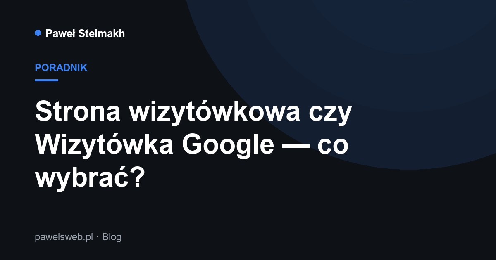

Strona wizytówkowa czy Wizytówka Google — co wybrać?

To jedno z najczęstszych pytań małych firm. Odpowiedź brzmi: najlepiej mieć oba — bo działają razem. Ale jeśli musisz zacząć od jednego, poniżej podpowiadam od czego.
Czym się różnią
Wizytówka Google (Profil Firmy) to Twoja wizytówka w wyszukiwarce i na Mapach. Pokazuje nazwę, godziny, telefon, opinie i zdjęcia, gdy ktoś szuka np. „fryzjer Bielsko-Biała”. Jest darmowa, ale trzeba ją poprawnie skonfigurować i zweryfikować.
Strona internetowa to Twoja przestrzeń, w pełni pod Twoją kontrolą. Tu pokazujesz pełną ofertę, cennik, realizacje i budujesz zaufanie tak, jak chcesz — bez ograniczeń szablonu Google.
Kiedy wystarczy Wizytówka Google
Jeśli działasz lokalnie i klienci szukają Cię „na już” (usługi, gastronomia, warsztat), Wizytówka Google potrafi przynieść pierwsze telefony bardzo szybko. To dobry punkt startu.
Kiedy potrzebujesz strony
Gdy chcesz pokazać więcej niż mieści wizytówka, budować markę, zbierać zapytania przez formularz albo sprzedawać — strona jest niezbędna. Wygląda profesjonalnie i wzbudza zaufanie.
Od czego zacząć
Jeśli budżet jest napięty, zacznij od tego, gdzie są Twoi klienci: lokalnie — od Wizytówki Google, a przy szerszej ofercie — od strony wizytówkowej. Potem dołóż drugi element.
Potrzebujesz strony lub SEO?
Napisz — odezwę się, doradzę najlepsze rozwiązanie i przygotuję bezpłatną wycenę.
Wypełnij formularz WhatsApp